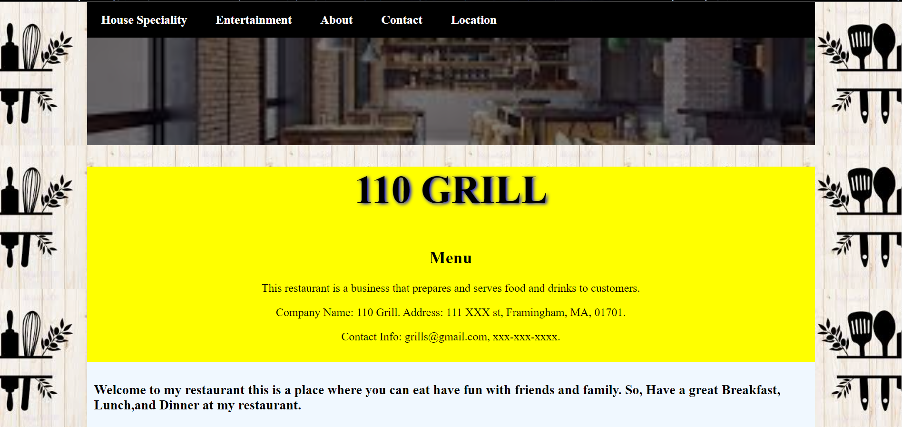
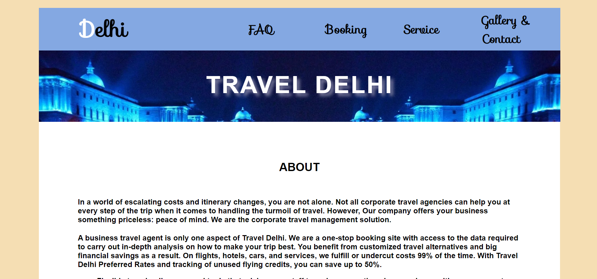
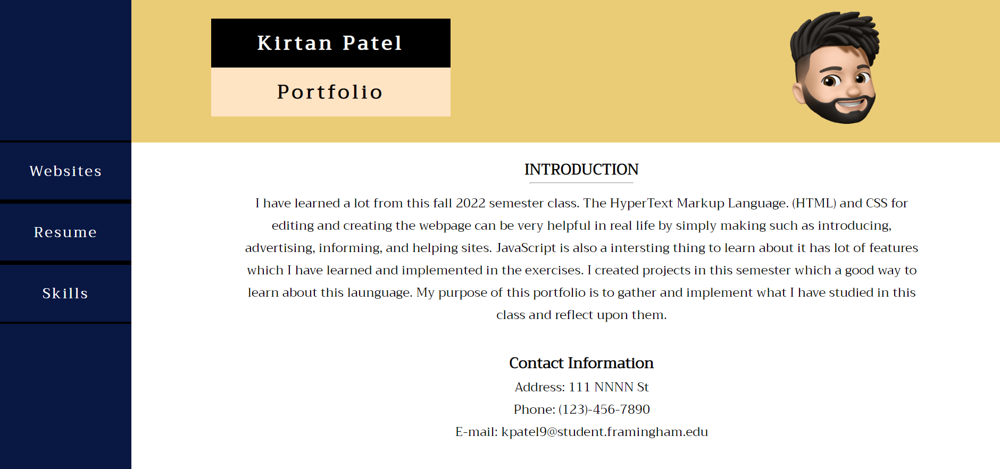

WEBSITES
INTRODUCTION
This purpose of this page is to show what I have learned and what projects I made in this semester class. By creating this projects I have learned and changed the layout by thinking about the image of how would finished website would look like. It helped me made myself more creative. Not only just I learned about html and css my creativity of makeing webpages is improveing day by day as I create more.
- Restaurant
- Information
- Eportfolio
There are three projects I have made in this semester and those are all listed here and I have also included their information. The underlined text is the link which will directly take you to the project's page.
Project 1 - Restaurant
This is the first project that I have created in this class. When I started making it and when I finished it is complete opposite of what it looked and what I imagined it to be. Though it is not perfect it has lot of mistakes which I improved and still need to improve.
It has house speciality page, and entertainment page which has variety of styles and editing in it. I have learned and created a table also aligning the text with the image. This is when I started thinking creative and used it to make this project.
Project 2 - Informational Project
In this project I have created an site where people can learn and nagivate around the information which I have provide. It is about booking or planning a trip which gives a good iden on the place to travel called Delhi. It has five webpages that are helpful to the people who needs the information.
It worked well creating it because I already had experience with creating a project before. If I had more time I would give more details and edit the page so, that people can understand the information better. It helped me understand how to create the form, better aligning the objects, buttons.
Project 3 - Eportfoilo
In this project I am creating a eportfolio of my own and stating all the things that I have learned so far in the class, and also little bit about myself. By creating other projects before this one I did't had much time thinking about how it would look like because I had a clear picture of what and how I should make this webpage more attractive and understandable.
I am makeing three webpages in total which give my information such as my resume, my contact info, my projects that I have created, and skills which I developed in this semester.